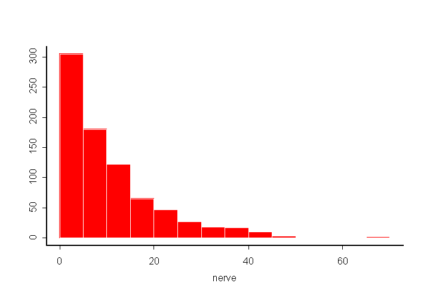
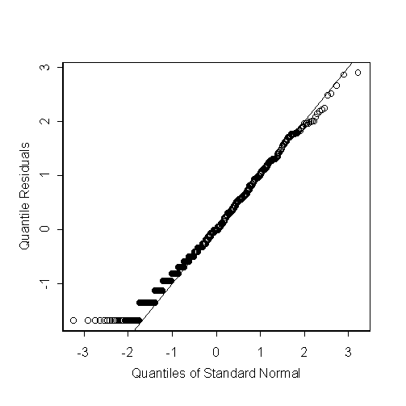

| / Home |
Keywords: exponential distribution, right skew data
The data gives the time between 800 successive pulses along a nerve fibre. There are 799 observations rounded to the nearest half in units of 1/50 second.
Data File (tab-delimited text)
| Fatt, P., and Katz, B. (1952). Spontaneous subthreshold activity at motor nerve endings. Journal of Physiology 117, 109-128. |
| Cox, D. R., and Lewis, P. A. W. (1966). The Statistical Analysis of Series of Events. Methuen, London. |
| Jørgensen, B. (1982). The Generalized Inverse-Gaussian Distribution. Springer-Verlag. |
The distribution of times is approximately exponential. Jørgensen (1982) and Cox and Lewis (1996) found some discrepancy from the exponential distribution. This can be seen in the lower tail of a plot of quantile residuals. There is no trend in the mean or the dispersion.
> summary(nerve) Min. 1st Qu. Median Mean 3rd Qu. Max. 0.5 3.5 7.5 10.95 15 69 > hist(y)

> out <- glm(nerve~1,family=Gamma) > res <- qres.gamma(out,dispersion=1) > qqnorm(res,ylab="Quantile Residuals") > abline(0,sqrt(798/799))

|
Home - About Us -
Contact Us Copyright © Gordon Smyth |